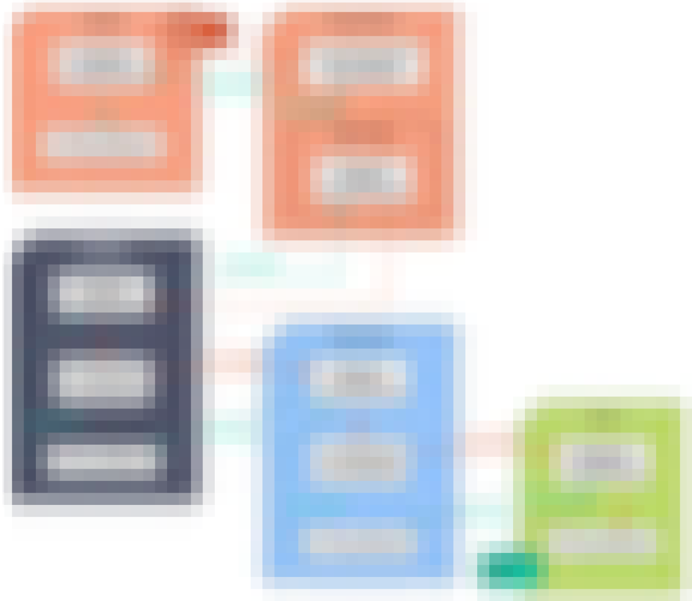
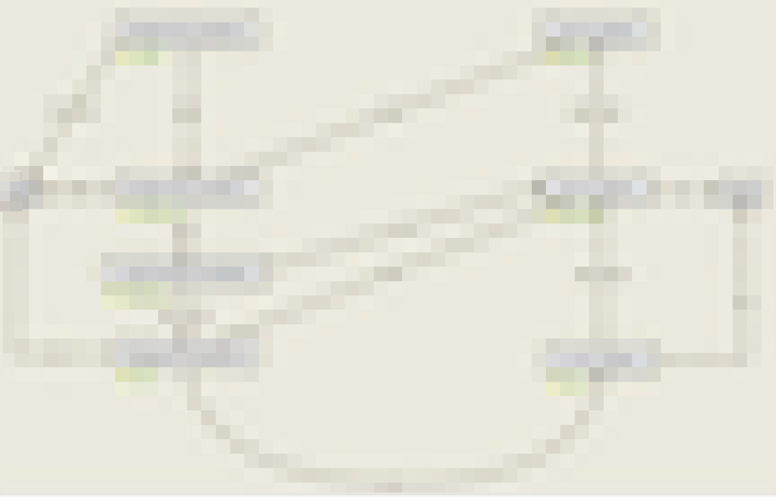
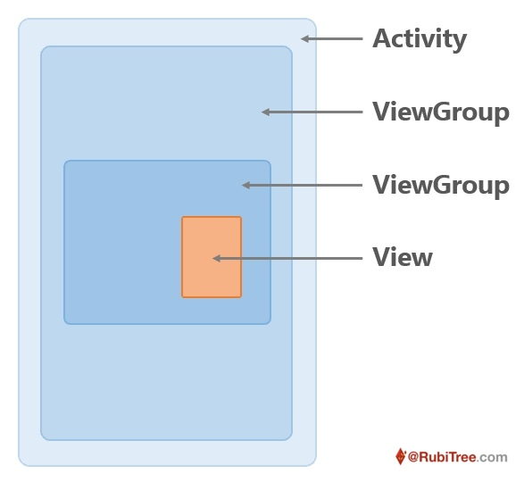

目录：
引子
事件分发，我想大部分人都能说几句，哦，三大方法，哦，那段经典伪代码，哦，责任链...
但如果要让你完完整整捋一遍，你可能就开始支支吾吾了，只能想到啥说啥
这块的东西确实麻烦，说出来不怕吓到你，事件流到底怎么流与这些因素都有关系：是什么事件类型（DOWN/MOVE/UP/CANCEL）、所在的View种类（Activity/ViewGroup/View）、在哪个回调方法（dispatch()/onIntercept()/onTouch()）、回调方法给不同的返回值（true/false/super.xxx），甚至对当前事件的不同处理还会对同一事件流中接下来的事件造成不同影响
比如我可以问：重写某个ViewGroup里的dispatchTouchEvent方法，对MOVE事件返回false，会怎么影响接下来的事件分发？
于是就有人对这些情况分门别类进行总结，得到了很多规律，也画出了纷繁复杂的事件分发流程图（@@@换图）：
× N  × N
甚至还有类似题图那样的动态流程图（是的，吸引你进来的题图居然是反面教材，我也很心疼啊，画了我半个下午，结果最后并没有太大的帮助）
这些规律和流程图确实是对的，而且某种意义上也是非常清晰的，能帮助你在调试bug的时候找到一点方向
你或许可以奋发图强，把这些流程图和规律背下来，在需要的时候一通叽里呱啦背完大家大眼瞪小眼
但它们并不能让你真正理解事件分发是什么样子，面对「是什么、为什么、怎么办」三连，你只能抱拳告辞
那要怎么理解事件分发呢？如果你去请教大牛，大牛说，这简单啊，去看View和ViewGroup这几个方法的源码，看懂你就会了
大牛说得没毛病，不过我们菜鸡可能还是很懵逼，这几个方法的源码没有长到没法看的程度，但一堆其他的细节也把基本的逻辑涂抹地面目全非，所以这几个方法不是不能看，而且最后一定要看，只是不太适合一开始就直接看
那要看什么呢？看下面这份代码，它把源码中与事件分发相关的内容剥离了出来，至少有这两个优点：
- 相比源码，这份代码足够短足够简单，那些跟事件分发无关的东西通通不要来干扰我
- 长度总共不超过150行，剔除了所有跟事件分发无关的代码，并且把一些因为其他细节导致写得比较复杂的逻辑，用更简单直接的方式表达了
- 相比那段经典的事件分发伪代码（见附录），这份代码又足够详细，详细到能告诉你所有你需要知道的事件分发的具体细节
- 那段经典伪代码只能起到提纲挈领的作用，而这份麻雀代码虽然极其精简但它五脏俱全，全到可以直接跑
- 你可以用它进行为伪布局，然后触发触摸事件，如果在回调中打印日志，它打印出的事件分发过程与你使用系统控件真实布局时事件分发的过程是一模一样的（后文会提供一个方便的事件分发日志打印工具）
先开门见山直接把小麻雀贴出来，如果能直接看明白，那是最好的，如果不想看也可以先跳过，后文会带你一步步把它看明白，进而看穿事件分发
// 本文代码基本都是Kotlin（@@@java版本可以看仓库）
interface ViewParent {
fun requestDisallowInterceptTouchEvent(isDisallowIntercept: Boolean)
}
open class MView {
var parent: ViewParent? = null
open fun dispatch(ev: MotionEvent): Boolean {
// 源码里没有这么直接但区别不大，主要会考虑是否设置了onTouchListener和是否enable
return onTouch(ev)
}
open fun onTouch(ev: MotionEvent): Boolean {
return false
}
}
open class MViewGroup(private val child: MView) : MView(), ViewParent {
private var isChildNeedEvent = false
private var isSelfNeedEvent = false
private var isDisallowIntercept = false
init {
child.parent = this // 这里只是示意，实际中不建议这么写，会造成提前发布未构造完成的实例
}
override fun dispatch(ev: MotionEvent): Boolean {
var handled = false
if (ev.actionMasked == MotionEvent.ACTION_DOWN) {
clearStatus()
if (!isDisallowIntercept && onIntercept(ev)) {
isSelfNeedEvent = true
handled = onTouch(ev)
} else {
handled = child.dispatch(ev)
if (handled) isChildNeedEvent = true
if (!handled) { // 这里没有用 if else 是因为这样写上下一致，更清晰
handled = onTouch(ev)
if (handled) isSelfNeedEvent = true
}
}
} else {
// 这里 isSelfNeedEvent 条件判断应该放在 isChildNeedEvent 前面
// 因为两个都为真的情况只能是自己之后通过 onIntercept 抢了控制权，那这之后的控制权就不会去 child 那儿了
if (isSelfNeedEvent) {
handled = onTouch(ev)
} else if (isChildNeedEvent) {
if (!isDisallowIntercept && onIntercept(ev)) {
isSelfNeedEvent = true
val cancel = MotionEvent.obtain(ev)
cancel.action = MotionEvent.ACTION_CANCEL
handled = child.dispatch(cancel)
cancel.recycle()
} else {
handled = child.dispatch(ev)
}
}
// 这里不用再 else 了，因为如果 isSelfNeedEvent 和 isChildNeedEvent 都不为 true，上面不会再发事件下来了
}
if (ev.actionMasked == MotionEvent.ACTION_UP
|| ev.actionMasked == MotionEvent.ACTION_CANCEL) {
clearStatus()
}
return handled
}
private fun clearStatus() {
isChildNeedEvent = false
isSelfNeedEvent = false
isDisallowIntercept = false
}
override fun onTouch(ev: MotionEvent): Boolean {
return false
}
open fun onIntercept(ev: MotionEvent): Boolean {
return false
}
override fun requestDisallowInterceptTouchEvent(isDisallowIntercept: Boolean) {
this.isDisallowIntercept = isDisallowIntercept
parent?.requestDisallowInterceptTouchEvent(isDisallowIntercept)
}
}
/**
* 这里的大逻辑类似 MViewGroup，但细节很多不同，主要因为没有 onIntercept，会简单一些
*/
open class MActivity(private val childGroup: MViewGroup) {
private var isChildNeedEvent = false
private var isSelfNeedEvent = false
open fun dispatch(ev: MotionEvent): Boolean {
var handled = false
if (ev.actionMasked == MotionEvent.ACTION_DOWN) {
clearStatus()
handled = childGroup.dispatch(ev)
if (handled) isChildNeedEvent = true
if (!handled) {
handled = onTouch(ev)
if (handled) isSelfNeedEvent = true
}
} else {
// 这里 isSelfNeedEvent 和 isChildNeedEvent 不会同时为真，顺序无所谓
if (isSelfNeedEvent) {
handled = onTouch(ev)
} else if (isChildNeedEvent) {
handled = childGroup.dispatch(ev)
}
if (!handled) handled = onTouch(ev)
}
if (ev.actionMasked == MotionEvent.ACTION_UP
|| ev.actionMasked == MotionEvent.ACTION_CANCEL) {
clearStatus()
}
return handled
}
private fun clearStatus() {
isChildNeedEvent = false
isSelfNeedEvent = false
}
open fun onTouch(ev: MotionEvent): Boolean {
return false
}
}
- 小麻雀在模拟布局的时候做了一些简化：View的父子关系通过构造器建立，而且是独生子女，一个父容器中只有一个子元素
- 感觉有点乱是不是，没有想象中那么简单啊，它是不是对的呢，你写的是代码还是bug啊？没事，让我们来测试一下（为了避免引子部分过长，测试部分放在正文后面）
这段不长的代码能让你相对容易地对事件分发具体是什么样有所了解
但讲道理，它还是有点复杂，而且看完你也不一定能理解它为什么是这样，这也是读别人代码的困难之处：没有思路
所以能不能再简单一点呢？
能！我理想中的可读代码应该是长这样的：要实现的需求 -> 所使用的方案 -> 操作的细节 -> 具体的代码
所以本着己所不欲勿施于人的朴实道理，下面我将假设我们要从头造一个事件分发的框架，先从最简单的需求开始思考方案编写代码，然后不断增加需求并继续思考方案编写代码，最后得到上面这段基本逻辑与Android源码接近的麻雀代码
1.试造轮子
1.1.第一次试造
我们先实现一个最简单的需求：Activity中有一堆层层嵌套的View，有且只有最里边那个View要处理事件，比如点击事件

思考方案：
- 首先事件从哪儿来，肯定得从父亲那来，因为子View被包裹在里面，没有直接与外界通信的办法，而实际中
Activity连接着根ViewDecorView，它是通往外界的桥梁，能接收到屏幕硬件发送过来的触摸事件 - 所以事件是从
Activity开始，一层一层从ViewGroup传到最里边的子View - 这时只需要一个从外向里传递事件的
passEvent(ev)方法，父亲一层层往里调，能把事件传递过去，就完成了需求
示意图
麻雀代码：
open class MView {
open fun passEvent(ev: MotionEvent) {
// do sth
}
}
class MViewGroup(private val child: MView) : MView() {
override fun passEvent(ev: MotionEvent) {
child.passEvent(ev)
}
}
- 暂时把
Activity当成MViewGroup处理也没有问题 - 为什么是
MViewGroup继承MView而不是反过来，跟事件分发没有关系，这里就按照习惯来
1.2.第二次试造
然后我们增加一条需求，让情况复杂一点：Activity中有一堆层层嵌套的View，有好几个叠着的View能处理事件
同时需要增加一条设计原则：用户的一次操作，只能被一个View真正处理（消费）
- 要求这条原则是为了让操作的反馈符合用户直觉
- 很容易理解，正常情况下人只会想一次就做一件事
- 比如一个列表条目，列表可以点击进入详情，列表上还有个编辑按钮，点击可以编辑条目
- 这是一个上下两个View都能点击的场景，但用户点一个地方，肯定只想去做一件事，要么进入详情，要么是编辑条目，如果你点编辑结果跳了两个页面，那肯定是不合适的
- 再比如在一个可点击Item组成的列表里（比如微信的消息界面），Item可以点击进入某个聊天，列表还能滑动上下查看
- 如果你让Item和列表都处理事件，那在你滑动的时候，你可能得跳一堆你不想去的聊天页面
- 比如一个列表条目，列表可以点击进入详情，列表上还有个编辑按钮，点击可以编辑条目
如果使用第一次试造的框架，要遵守这条原则，就需要在每一个可以处理事件的View层级，判断出自己要处理事件后，不继续调用child的passEvent方法了，保证只有自己处理了事件
但如果真这样实现了，在大部分场景下会显得怪怪的，因为处理事件的顺序不对
- 比如还是上面的列表，当用户点击按钮想编辑条目的时候，点击事件先传到条目，如果你在条目中判断需要事件，然后把事件消费了不传给子View，用户就永远点不开编辑条目了
- 而且换个角度看更加明显，用户肯定希望点哪，哪儿最靠上、离手指最近的东西被触发
所以新增需求的一个得分点是：找到那个适合处理事件的View，而我们当前的答案是：那个最里面的View适合处理事件
这就不能是等parent不处理事件了才把事件传给child，应该反过来，你需要事件的处理顺序是从里向外：里边的child不要事件了，才调用parent的passEvent方法把事件传出来
于是得加一条向外的通道，只能在这条向外的通道上处理事件，前面向里的通道什么都不干，只管把事件往里传
所以这时你有了两条通道，改个名字吧，向里传递事件是passIn方法，向外传递并处理事件是passOut方法
示意图
麻雀代码：
open class MView {
var parent: MView? = null
open fun passIn(ev: MotionEvent) {
passOut(ev)
}
open fun passOut(ev: MotionEvent) {
parent?.passOut(ev)
}
}
class MViewGroup(private val child: MView) : MView() {
init {
child.parent = this // 示意写法
}
override fun passIn(ev: MotionEvent) {
child.passIn(ev)
}
}
这段代码没有问题，非常简单，但是它对需求意图的表达不够清晰，增加了框架的使用难度
- 如前所述，我们希望
passIn的时候只传递事件，希望在passOut的时候每个View决定是否要处理事件，并进行处理，而且在处理事件后，不再调用parent的passOut方法把事件传出来 - 你会发现，这其中包含了两类职责，一类是事件传递控制逻辑，另一类是事件处理钩子
- 其中事件传递控制逻辑基本不会变化，事件处理的钩子中可能做任何事情
- 我们需要把不同职责的代码分开，更需要把变化的和不变的分开，减少框架使用者的关注点
于是我把事件传递控制逻辑放在dispatch方法中，把onTouch方法作为事件处理钩子，而且钩子有一个返回值，表示钩子中是否处理了事件
open class MView {
open fun dispatch(ev: MotionEvent): Boolean {
return onTouch(ev)
}
open fun onTouch(ev: MotionEvent): Boolean {
return false
}
}
class MViewGroup(private val child: MView) : MView() {
override fun dispatch(ev: MotionEvent): Boolean {
var handled = child.dispatch(ev)
if (!handled) handled = onTouch(ev)
return handled
}
override fun onTouch(ev: MotionEvent): Boolean {
return false
}
}
这样写完，你会发现：
- 控制逻辑集中在
dispatch中，一目了然 onTouch单纯是一个钩子，框架使用者只需要关心这个钩子和它的返回值，不用太关心控制流程- 另外，连
parent也不需要了
1.3.第三次试造
上文的实现看上去已经初具雏形了，但其实连开始提的那条原则都没实现完，因为原则要求一次操作只能有一个View进行处理，而我们实现的是一个触摸事件只能有一个View进行处理
这里就涉及到一次触摸操作和一个触摸事件的区别
- 假设还没有触摸事件的概念，我们要怎么区分一次触摸操作呢？
- 把触摸操作细分一下，大概有按下动作、抬起动作、与屏幕接触时的移动和停留动作
- 很容易想到，要区分两次触摸操作，可以通过按下和抬起动作进行区分，按下动作开始了一次触摸操作，抬起动作结束了一次触摸，按下和抬起中间的移动和停留都属于这一次触摸操作，至于移动和停留是否要区分，目前没有看到区分的必要，可以都作为触摸中来处理
- 于是在一次触摸操作中就有了三种动作的类型：
DOWN/UP/ING，其中ING有点不够专业，改个名字叫MOVE吧 - 而每个触摸动作会在软件系统中产生一个同样类型的触摸事件
- 所以最后，一次触摸操作就是由一组从
DOWN事件开始、中间是多个MOVE事件、最后结束于UP事件的事件流组成
于是设计原则更确切地说就是：一次触摸产生的事件流，只能被一个View消费
在上次试造的基础上把一个事件变成一个组事件流，其实非常简单：处理DOWN事件时跟前面处理一个事件时一样，但需要同时记住DOWN事件的消费对象，后续的MOVE/UP事件直接交给它就行了
麻雀代码：
open class MView {
open fun dispatch(ev: MotionEvent): Boolean {
return onTouch(ev)
}
open fun onTouch(ev: MotionEvent): Boolean {
return false
}
}
class MViewGroup(private val child: MView) : MView() {
private var isChildNeedEvent = false
override fun dispatch(ev: MotionEvent): Boolean {
var handled = false
if (ev.actionMasked == MotionEvent.ACTION_DOWN) {
clearStatus()
handled = child.dispatch(ev)
if (handled) isChildNeedEvent = true
if (!handled) handled = onTouch(ev)
} else {
if (isChildNeedEvent) handled = child.dispatch(ev)
if (!handled) handled = onTouch(ev)
}
if (ev.actionMasked == MotionEvent.ACTION_UP) {
clearStatus()
}
return handled
}
private fun clearStatus() {
isChildNeedEvent = false
}
override fun onTouch(ev: MotionEvent): Boolean {
return false
}
}
- 增加了一个
isChildNeedEvent状态，对是子View是否处理了DOWN事件进行记录 - 在收到
DOWN事件的最开始和收到UP事件的最后，重置状态
此时框架使用者还是只需要关心onTouch钩子，在需要处理事件时进行处理并返回true，其他事情框架都做好了
1.4.第四次试造
上面的框架已经能完成基本的事件分发工作了，但下面这个需求，你尝试一下用现在框架能实现吗？
需求：在可滑动View中有一个可点击View，需要让用户即使按下的位置是可点击View，再进行滑动时，也可以滑动外面的的可滑动View
这个需求其实非常常见，比如所有「条目可点击的滑动列表」就是这样的（微信/QQ聊天列表）
假如使用上面的框架：
- 可滑动View会先把事件传到里边的可点击View
- 可点击View一看来事件了，我又能点击，那舍我其谁啊
- 然后外面的可滑动View就永远无法处理事件，也就无法滑动
所以直接使用现在的模型去实现的「条目可点击的滑动列表」，它会永远滑动不了
那怎么办呢？
- 难道要让里面的可点击View去感知一下（层层往上找），自己是不是被一个能消费事件的View包裹？是的话自己就不消费事件了？
- 这肯定是不行的，先不说子View层层反向遍历父亲是不是个好实现，至少不能外面是可以滑动的，里边View的点击事件就全部失效
- 或者我们调整
dispatch方法在传入事件过程中的人设，让它不是只能往里传递事件，而是在自己能消费事件的时候把事件给自己- 这肯定也是不行的，跟第一个办法的主要问题一样
直接想实现觉得到处是矛盾，找不到突破口，那就从头开始吧，从什么样的触摸反馈是用户觉得自然的出发，看看这种符合直觉的反馈方案是否存在，找出来它是什么，再考虑我们要怎么实现
- 当用户面对一个滑动View里有一个可点击View，当他摸在可点击View上时，他是要做什么？
- 显然，只有两个可能性，要么用户想点这个可点击View，要么用户想滑动这个可滑动View
- 那么，当用户刚用手指接触的时候，也就是
DOWN事件刚来的时候，能判断用户想干什么吗？很抱歉，不能 - 所以，客观条件下，你就是不可能在
DOWN事件传过来的时候，判断出用户到底想做什么，于是两个View其实都不能确定自己是否要消费事件
我*，这不傻*了吗，还搞什么GUI啊，大家都用命令行吧
等等，不要着急，GUI还是得搞的，不搞没饭吃的我跟你讲，所以你还是得想想，想尽办法去做到
你先忘记前面说的原则，你想想，不考虑其他因素，也不是只能用DOWN事件，只要你能判断用户的想法就行，你有什么办法
- 办法肯定是有的，你可以多等一会，看用户接下来的行为能匹配哪种操作模式
- 点击是这样：用户先
DOWN，然后MOVE很小一段，也不会MOVE出这个子View，关键是比较短的时间就UP - 滑动是这样：用户先
DOWN，然后开始MOVE，这时候可能会MOVE出这个子View，也可能不，但关键是比较长的时间也没有在UP，一直是在MOVE
- 点击是这样：用户先
- 所以你的结论是，只有
DOWN不行，还得看接下来的事件流，得走着瞧 - 再多考虑个长按的情况，总结就是：
- 如果在某个时间内
UP，就是点击里边的View - 如果比较长的时间
UP，但没怎么MOVE，就是长按里边的View - 如果在比较短的时间
MOVE比较长的距离，就是滑动外面的View
- 如果在某个时间内
看上去这个方案很不错，安排得明明白白，但我们现有的事件处理框架实现不了这样的判断方案，存在以下冲突点：
- 因为你无法在
DOWN的时候判断当前事件流的归属，所以一开始子View和父View都只能返回false，但为了能对后续事件做判断，你又希望事件继续流过它们，这就与当前的框架冲突了 - 然后事件流了一会，子View和父View可能都会对事件的归属做出自己的判断，然后就看谁先下手消费事件，下手早的就需要通知另一方你下手晚了，我先要了，但问题来了：
- 如果子View先下手，就要通知父View别要事件了，这比较简单，就是返回
true，不与当前框架冲突 - 如果父View要了事件，要通知子View别要了，目前的框架是做不到的，做的话需要调整dispatch在传入事件过程中的人设，需要能在往里传递事件前加一个拦截，能够看情况直接给自己的onTouch处理
- 如果子View先下手，就要通知父View别要事件了，这比较简单，就是返回
所以要实现这个判断方案，就肯定要对现在的事件处理框架进行修改，而且看上去一不小心就会大改
- 仔细想想，大概有这样两个改动相对小的思路：
- 思路一：
- 当事件走到可滑动父View的时候，它先处理事件，并且把事件攒着
- 当攒了几个事件，判断出不是自己要的时候，再把事件一股脑给子View，触发里边的点击事件
- 思路二：
- 当事件走到到可滑动父View的时候，它先把事件往里传，里边可能会处理事件，可能不会，可滑动父View都先不关心
- 但可滑动父View也不是放手不管，它开始暗中观察
- 假如里边处理事件，它就会绷紧神经准备伺机而动，先观察事件是不是符合触发自己消费事件的模式，一旦发现符合条件的事件模式，它就把事件拦截下来，即使里边在处理，它也不往里
disptach了，而是直接给自己的onTouch - 假如里边不处理事件，那啥问题没有，它直接处理事件就好了
- 假如里边处理事件，它就会绷紧神经准备伺机而动，先观察事件是不是符合触发自己消费事件的模式，一旦发现符合条件的事件模式，它就把事件拦截下来，即使里边在处理，它也不往里
- 思路一：
- 两个思路总结一下：
- 思路一：外面的父View先拦事件，如果判断拦错了，再把事件往里发
- 思路二：外面的父View先不拦事件，在判断应该拦的时候，突然把事件拦下来
- 这两个思路看似都要对当前框架做改变，看似差不多，但其实还是有比较明显的优劣的
- 思路一问题比较明显：
- 父View把事件拦下来了，然后发现拦错了再给子View，但其实子View又并不一定能消费事件，这不就是白做一步吗
- 等到子View不处理事件，又把事件们还给父View，它还得继续处理事件
- 整个过程不仅繁琐，而且会让开发者感觉到别扭
- 所以这个思路是不行的，还得是把事件先给子View
- 思路二就相对正常多了，只有一个问题（下一节再讲，你可以猜一猜，这里我先当没发现），而且框架要做的改变也很少：
- 父View在往里
dispatch事件前，增加一个分析拦截方法，开发者可以覆写这个方法，加入自己的事件模式分析代码，并且可以在确定要拦截的时候进行拦截- 把分析拦截逻辑抽成一个方法非常合理：什么时候拦，什么时候不拦，内里的逻辑很多，但对外暴露的API可以很小，非常适合抽出去
- 在确定自己要拦截事件的时候，即使里边在一开始消费了事件，也不把事件往里传了，直接给自己的
onTouch
- 父View在往里
- 思路一问题比较明显：
示意图：
于是使用思路二，能写出以下代码：
open class MView {
open fun dispatch(ev: MotionEvent): Boolean {
return onTouch(ev)
}
open fun onTouch(ev: MotionEvent): Boolean {
return false
}
}
class MViewGroup(private val child: MView) : MView() {
private var isChildNeedEvent = false
private var isSelfNeedEvent = false
override fun dispatch(ev: MotionEvent): Boolean {
var handled = false
if (ev.actionMasked == MotionEvent.ACTION_DOWN) {
clearStatus()
if (onIntercept(ev)) {
isSelfNeedEvent = true
handled = onTouch(ev)
} else {
handled = child.dispatch(ev)
if (handled) isChildNeedEvent = true
if (!handled) {
handled = onTouch(ev)
if (handled) isSelfNeedEvent = true
}
}
} else {
if (isSelfNeedEvent) {
handled = onTouch(ev)
} else if (isChildNeedEvent) {
if (onIntercept(ev)) {
isSelfNeedEvent = true
handled = onTouch(ev)
} else {
handled = child.dispatch(ev)
}
}
}
if (ev.actionMasked == MotionEvent.ACTION_UP) {
clearStatus()
}
return handled
}
private fun clearStatus() {
isChildNeedEvent = false
isSelfNeedEvent = false
}
override fun onTouch(ev: MotionEvent): Boolean {
return false
}
open fun onIntercept(ev: MotionEvent): Boolean {
return false
}
}
写的过程中增加了一些对细节的处理：
- 不仅是在
DOWN事件的dispatch前需要拦截，在后续事件中，也需要加入拦截，否则无法实现中途拦截的目标 - 在某一个事件判断拦截之后，还需要在后续事件中再判断一次是否要拦截吗？
- 完全不需要，我们希望的就是在一次触摸中，尽可能只有1个对象去消费事件，决定是你了，那就不要变
- 所以增加一个
isSelfNeedEvent记录自己是否拦截过事件，如果拦截过，后续事件直接就交给自己处理
- 在后续事件时，子View没有处理事件，外面也不再处理了，同样因为只能有一个View处理，（Actvity会处理这样的事件，后面会提到）
这一下代码是不是看上去瞬间复杂了，但其实只是增加了一个事件拦截机制，对比上一次试造的轮子，会更容易理解（要是Markdown支持代码块内自定义着色就好了）
而且对于框架的使用者来说，关注点一样非常少
- 重写
onIntercept方法，判断什么时候需要拦截事件，需要拦截时返回true - 重写
onTouch方法，如果处理了事件，返回true
1.5.第五次试造
上面的处理思路虽然实现了需求，但可能会导致一个问题：里边的子View接收了一半的事件，可能都已经开始处理并做了一些事情，父View忽然就不把后续事件给它了，会不会违背用户操作的直觉？甚至出现更奇怪的现象？
这个问题确实比较麻烦，分两类情况讨论
- 里边的View接收了一半事件，但还没有开始处理，或者在进行可以被取消的处理
- 比如对于一个可点击的View，View的默认实现是只要被touch了，就会有
pressed状态，如果你设置了对应的background，你的View就会有高亮效果 - 这种高亮即使被中断也没事，不会让用户感觉到奇怪，不信你自己试试微信的聊天列表
- 但一个值得注意的点是，如果你只是直接不发送
MOVE事件了，这会有问题，就这个按下高亮的例子，如果你只是不传MOVE事件了，那谁来告诉里边的子View取消高亮呢？所以你需要在中断的时候也传一个结束事件- 但是，你能直接传一个
UP事件吗？也是不行的，因为这样就匹配了里边点击的模式了，会直接触发一个点击事件，这显然不是我们想要的 - 于是外面需要给一个新的事件，这个事件的类型就叫取消事件好了
CANCEL
- 但是，你能直接传一个
- 总结一下，对于这种简单的可被取消情况，你可以这样去处理：
- 在确定要拦截的时候，在把真正的事件转发给自己的
onTouch的同时，另外生成一个新的事件发给自己的子View，事件类型是CANCEL，它将是子View收到的最后一个事件 - 子View可以在收到这个事件后，对当前的一些行为进行取消
- 在确定要拦截的时候，在把真正的事件转发给自己的
- 比如对于一个可点击的View，View的默认实现是只要被touch了，就会有
- 里边的View接收了一半事件，已经开始处理了，而且最好不要去取消，或者取消了会显得很怪
- 这个时候，事情会复杂一些，而且这个场景发生的远比你想象中的多，形式也多种多样，不处理好的后果也比只是让用户感觉上奇怪要严重得多，可能会有的功能会实现不了，下面举两个例子
- 在
ViewPager里有三个page，page里是ScrollView，ViewPager可以横向滑动，page里的ScrollView可以竖向滑动- 如果按前面逻辑，当
ViewPager把事件给里边ScrollView之后，它也会偷偷观察，如果你一直是竖向滑动，那没话说，ViewPager不会触发拦截事件 - 但如果你竖着滑着滑着，手抖了，开始横滑（或者只是斜滑），
ViewPager就会开始紧张，想「组织终于决定是我了吗？真的假的，那我可就不客气了」，于是在你斜滑一定距离之后，忽然发现，你划不动ScrollView了，而ViewPager开始动 - 原因就是
ScrollView的竖滑被取消了，ViewPager把事件拦下来，开始横滑 - 这个体验还是比较怪的，会有种过于灵敏的感觉，会让用户只能小心翼翼地滑动
- 如果按前面逻辑，当
- 在一个
ScrollView里有一些按钮，按钮有长按事件，长按再拖动就可以移动按钮- （更常见的例子是一个列表，里边的条目可以长按拖动）
- 同样按前面的逻辑，当你长按后准备拖动按钮时，你怎么保证不让
ScrollView把事件拦下来呢？
- 在
- 所以这类问题是一定要解决的，但要怎么解决呢
- 还是先从业务上看，从用户的角度看，当里边已经开始做一些特殊处理了，外面应不应该把事件抢走？
- 不应该对吧，OK，解决方针就是不应该让外边的View抢事件
- 所以接下来的问题是：谁先判断出外边的View不该抢事件，里边的子View还是外边的父View？然后怎么不让外边的View抢？
- 首先，肯定是里边的View做出判断：这个事件，真的，外边的View你最好别抢，要不用户不开心了
- 然后里边就得告知外边，你别抢了，告知可以有几个方式
- 外边抢之前问一下里边，我能不能抢
- 里边在确定这个事件不能被抢之后，从
dispatch方法返回一个特别的值给外边（之前只是true和false，现在要加一个） - 里边通过别的方式通知外边，你不要抢
- 讲道理，我觉得三个方式都行，但第三个方式最为简单直接，而且不用改之前的大逻辑，Android也使用了这个方式，父View给子View提供了一个方法
requestDisallowInterceptTouchEvent，子View调用它改变父View的一个状态，然后父View每次在准备拦截前都会判断这个状态，当然这个状态只对当前事件流有效 - 然后，这个情况还得再注意一点，它应该是向外递归的，也就是，在复杂的情况中，有可能有多个上级在暗中观察，当里边的View决定要处理事件而且不准备交出去的时候，外面所有的暗中观察的父View都应该把脑袋转回去
- 还是先从业务上看，从用户的角度看，当里边已经开始做一些特殊处理了，外面应不应该把事件抢走？
- 这个时候，事情会复杂一些，而且这个场景发生的远比你想象中的多，形式也多种多样，不处理好的后果也比只是让用户感觉上奇怪要严重得多，可能会有的功能会实现不了，下面举两个例子
所以，连同上一次试造，总结一下
- 对于多个可消费事件的View进行嵌套的情况，怎么判定事件的归属会变得非常麻烦，无法立刻在
DOWN事件时就确定，只能在后续的事件流中进一步判断 - 于是在没判断归属的时候，先由里边的子View消费事件，外面暗中观察，然后两方同时对事件类型做进一步匹配，并准备在匹配成功后对事件归属进行抢拍
- 抢拍是先抢先得
- 父亲先抢到，发个
CANCEL事件给儿子就完了 - 儿子先抢到，就得大喊大叫，撒泼耍赖，爸爸们行行好吧，最后得以安心处理事件
- 父亲先抢到，发个
另外有几个值得一提的地方：
- 这种先抢先得的方式感觉上有点乱来是吧，但也没有更好的办法了，一般都是调试者自己根据实际用户体验调整，让父亲或儿子，在最适合的时机准确及时地抢到应得的事件
- 父View在拦截下事件后，把接下来的事件传给
onTouch，onTouch只会收到后半部分的事件，这样会不会有问题呢？- 确实直接给后半部分会有问题，所以一般情况是，在没拦截的时候就做好如果要处理事件的一些准备工作，以便之后拦截事件了，只使用后半部分事件也能实现符合用户直觉的反馈
到现在，代码就跟一开始贴出的麻雀一模一样了：
interface ViewParent {
fun requestDisallowInterceptTouchEvent(isDisallowIntercept: Boolean)
}
open class MView {
var parent: ViewParent? = null
open fun dispatch(ev: MotionEvent): Boolean {
return onTouch(ev)
}
open fun onTouch(ev: MotionEvent): Boolean {
return false
}
}
open class MViewGroup(private val child: MView) : MView(), ViewParent {
private var isChildNeedEvent = false
private var isSelfNeedEvent = false
private var isDisallowIntercept = false
init {
child.parent = this
}
override fun dispatch(ev: MotionEvent): Boolean {
var handled = false
if (ev.actionMasked == MotionEvent.ACTION_DOWN) {
clearStatus()
// add isDisallowIntercept
if (!isDisallowIntercept && onIntercept(ev)) {
isSelfNeedEvent = true
handled = onTouch(ev)
} else {
handled = child.dispatch(ev)
if (handled) isChildNeedEvent = true
if (!handled) {
handled = onTouch(ev)
if (handled) isSelfNeedEvent = true
}
}
} else {
if (isSelfNeedEvent) {
handled = onTouch(ev)
} else if (isChildNeedEvent) {
// add isDisallowIntercept
if (!isDisallowIntercept && onIntercept(ev)) {
isSelfNeedEvent = true
// add cancel
val cancel = MotionEvent.obtain(ev)
cancel.action = MotionEvent.ACTION_CANCEL
handled = child.dispatch(cancel)
cancel.recycle()
} else {
handled = child.dispatch(ev)
}
}
}
if (ev.actionMasked == MotionEvent.ACTION_UP
|| ev.actionMasked == MotionEvent.ACTION_CANCEL) {
clearStatus()
}
return handled
}
private fun clearStatus() {
isChildNeedEvent = false
isSelfNeedEvent = false
isDisallowIntercept = false
}
override fun onTouch(ev: MotionEvent): Boolean {
return false
}
open fun onIntercept(ev: MotionEvent): Boolean {
return false
}
override fun requestDisallowInterceptTouchEvent(isDisallowIntercept: Boolean) {
this.isDisallowIntercept = isDisallowIntercept
parent?.requestDisallowInterceptTouchEvent(isDisallowIntercept)
}
}
这次改动主要是增加了发出CANCEL事件和requestDisallowInterceptTouchEvent机制
- 在发出
CANCEL事件时有一个细节：没有在给child分发CANCEL事件的同时继续把原事件分发给自己的onTouch- 这是源码中的写法，不是我故意的，可能是为了让一个事件也只能有一个View处理，避免出现bug
- 实现
requestDisallowInterceptTouchEvent机制时，增加了ViewParent接口- 不使用这种写法也行，但使用它从代码整洁的角度看会更优雅，比如避免反向依赖，而且这也是源码的写法，于是直接搬来了
虽然目前整个框架的代码有点复杂，但对于使用者来说，依然非常简单，只是在上一版框架的基础上增加了：
- 如果View判断自己要消费事件，而且执行的是不希望被父View打断的操作时，需要立刻调用父View的
requestDisallowInterceptTouchEvent方法 - 如果在
onTouch方法中对事件消费并且做了一些操作，需要注意在收到CANCEL事件时，对操作进行取消
到这里，事件分发的主要逻辑已经讲清楚了，不过还差一段Activity中的处理，其实它做的事情类似ViewGroup，只有这几个区别：
- 不会对事件进行拦截
- 只要有子View没有处理的事件，它都会交给自己的
onTouch
所以补上Activity的麻雀：
open class MActivity(private val childGroup: MViewGroup) {
private var isChildNeedEvent = false
private var isSelfNeedEvent = false
open fun dispatch(ev: MotionEvent): Boolean {
var handled = false
if (ev.actionMasked == MotionEvent.ACTION_DOWN) {
clearStatus()
handled = childGroup.dispatch(ev)
if (handled) isChildNeedEvent = true
if (!handled) {
handled = onTouch(ev)
if (handled) isSelfNeedEvent = true
}
} else {
if (isSelfNeedEvent) {
handled = onTouch(ev)
} else if (isChildNeedEvent) {
handled = childGroup.dispatch(ev)
}
if (!handled) handled = onTouch(ev)
}
if (ev.actionMasked == MotionEvent.ACTION_UP
|| ev.actionMasked == MotionEvent.ACTION_CANCEL) {
clearStatus()
}
return handled
}
private fun clearStatus() {
isChildNeedEvent = false
isSelfNeedEvent = false
}
open fun onTouch(ev: MotionEvent): Boolean {
return false
}
}
1.6.总结
到这里，我们终于造好了一个粗糙但不劣质的轮子，源码的主要逻辑与它的区别不大，具体区别大概有：TouchTarget机制、多点触控机制、nested scroll、处理各种listener、结合View的状态进行处理等，相比主要逻辑，它们就没有那么重要了，之后有空会写关于多点触控和TouchTarget的内容（看！热腾腾的坑！）
所以回头看，你会发现事件分发其实很简单，它的关键不在于「不同的事件类型、不同的View种类、不同的回调方法、方法不同的返回值」对事件分发是怎么影响的
关键在于「它要实现什么功能？对实现效果有什么要求？使用了什么解决方案？」，从这个角度，就能清晰而且简单地把事件分发整个流程梳理清楚
事件分发要实现的功能是：让合适的View去消费触摸事件，对用户的操作进行反馈，使之符合用户的直觉
从用户的直觉出发能得到这么两个要求
- 用户的一次操作只有一个View去消费
- 让消费事件的View跟用户的意图一致
第二个要求是最难的，如果有多个View都可以消费触摸事件，怎么判定哪个View更适合消费，并且把事件交给它
于是简单但有效地使用了一套先到先得的策略，让多个可消费触摸事件的View拥有近乎平等的竞争消费者的资格：它们都能接收到事件，并在自己判定应该消费事件的时候去发起竞争申请，申请成功后事件就全部由它消费
2.测试轮子
可能有人会问，听你纸上谈兵了半天，你讲的真的跟源码一样吗，这要是不对我不是亏大了
问的好，所以接下来我会使用一个测试事件分发的日志测试框架对这个小麻雀进行简单的测试，而且后面还会有实践部分真刀真枪地把上面讲过的东西练起来
@@@
3.实践
实际上进行事件分发的实践时，会包括两方面内容：
- 一方面是就是控制事件的分发。这也是本文讲的主要内容，这NestedScrolling部分基本得靠自己对事件分发的认识然后自己手写
- 另一方面是对事件的处理。核心内容是手势的识别，比如识别用户的操作是单击、双击、长按、滑动，这部分也可以自己手写，不会太难，但一般场景中我们都可以使用SDK提供的十分好用的帮助类
GestureDetector，它用起来非常方便
所以下面的实践虽然会包含这两方面，但关键是怎么控制事件的分发，对手势的识别不是重点，我也会选择比较简单的
3.1.选题
前面说了，事件分发的难点是有多个View都可以消费触摸事件的情况，这种情况一般被称为冲突，比如以前常见的ScrollView嵌套滑动冲突。除此之外，我们也提到过点击和滑动的冲突，但系统早就在View和ViewGroup里把这种情况给处理好了，要了解的同学可以直接去看源码。当然也还有很多其他类型的冲突，但下面还是准备讲跟滑动有关的冲突，它相对更加常见，虽然现在NestedScrolling机制已经把同向滑动冲突处理得非常优秀了，但某些场景下这种机制也会有一些小缺点，在下面要讲的例子里你就能看到它的小缺点们
所以最后本文选择的实践例子是：悬停布局
你叫它粘性布局、悬浮布局、折叠布局都行，总之它理想的效果应该是这样：

用文字描述是这样：
- 页面内容分为Header、悬停区和内容区，其中内容区可以左右滑动，有多个Tab页，而且每个Tab页是允许上下滑动的
- 用户向上滑动时，先折叠Header，当Header全部折叠收起后，悬停区悬停不动，内容区向上滑动
- 用户向下滑动时，先把内容区向下滑动，然后展开Header，悬停区顺势下移
- 其中内容区的滑动和Header的收起展开在用户连续滑动时应该表现为连续的，甚至在用户滑动中快速抬起时，滑动的惯性也需要在两个动作间保持连续
在当前这个时间点（2019.1.1），这个例子还有不少实际意义，因为它虽然是比较常见的一个交互效果，但现在市场上的主流APP，居然是这样的...（饿了么v8.9.3）

这样的...（知乎v5.32.2）

这样的...（腾讯课堂v3.24.0.5）

这样的...（哔哩哔哩v5.36.0）

<!--（可以加上个奇怪的个人主页@@@）-->

其中哔哩哔哩的视频详情页和美团（没有贴图）算是做得最好的，滑动连续惯性也连续，但也存在两个小瑕疵：在Header部分上下滑动时你可以同时进行左右滑动；在惯性滑动没有停止的时候无法进行左右滑动
而腾讯课堂的问题是最普遍的：惯性不连续
最奇葩是饿了么的店铺首页和知乎的Live详情页，都是创收的页面啊，居然能自带鬼畜，好吧，也是心大
其他还有一些千奇百怪的bug就不举例了
所以，就让我们来看看，这个功能实现起来是不是真有那么难
<!--（然而并不难，下面会有50行的类哔哩哔哩的实现以及100行的无bug实现@@@去掉这句）-->
3.2.需求分析
如果内容区只有一个Tab页，一种简单直接的实现思路是：页面整个就是一个滑动控件，悬停区域会在滑动过程中不断调整自己的位置，实现悬停的效果
它的实现非常简单，效果也完全符合要求，不举例了，可以自己试试
但这里的需求是有多个Tab页，它用一整个滑动控件的思路是无法实现的，需要用多个滑动控件配合实现
- 先看看有哪些滑动控件：每个Tab页内肯定是独立的滑动控件，要实现Header的展开收起，可以把整个容器作为一个滑动控件
- 这就变成了一个外部滑动控件和一组内部滑动控件进行配合，看上去有点复杂，但实际上在一次用户滑动过程中，只有一个外部滑动控件和一个内部滑动控件进行配合
- 配合过程是这样的（可以回头看下前面的理想效果动态图）：
- 用户上滑，外部滑动控件先消费事件进行上滑，直到滑动到Header的底部，外部滑动控件滑动结束，把滑动事件交给内部滑动控件，内部滑动控件继续滑动
- 用户下滑，内部滑动控件先消费事件进行下滑，直到滑动到内部控件的顶部，内部滑动控件滑动结束，把滑动事件交给外部滑动控件，外部滑动控件继续滑动
- 当用户滑动过程中快速抬起进行惯性滑动的时候，也需要遵循上面的配合规律
乍一听你可能觉得这个需求不太对劲，确实，从大的角度看，用户的一次触摸操作，却让多个View先后对其进行消费，它违背了我们最初的原则，也超出了Android触摸事件处理框架提供的功能：父View没用完的事件子View继续用，子View没用完的事件父View继续用
但具体到这个需求中
- 首先，两个滑动控件配合消费事件的期望效果是，同内容区只有一个Tab页一样，让用户感知上认为自己在滑动一整个控件，只是其中某个部分会悬停，它并没有违背用户的直觉。所以，经过精心设计，多个View消费同一个事件流，也是可以符合用户直觉的，在这个领域表现最突出的就是
CoordinatorLayout了，它就是用来帮助开发者去实现他们精心设计的多个View消费同一个事件流的效果的 - 然后，由于滑动反馈的简单性，让多个滑动控件的滑动进行配合也是能够做到的。你可以自己实现，也可以借助API 21（已加入V4兼容包）开始提供的
NestedScrolling机制，它提供了一种优雅解决嵌套滑动问题的方案，方案的核心就是让多个滑动控件配合滑动，所以使用它也能实现这里的需求，另外CoordinatorLayout让多个滑动控件配合对同一个事件流进行消费也是使用了NestedScrolling机制
OK，既然需求提得没问题，而且我们也能实现，那下面就来看看具体要怎么实现
3.3.需求实现
可能有同学马上就举手了：我知道我知道，用CoordinatorLayout！
对，当前这个效果最常见的实现方式就是使用基于CoordinatorLayout的AppBarLayout全家桶，这是它的自带效果，通过简单配置就能实现，而且还附送更多其他特效，非常酷炫，前面看到的效果比较好的哔哩哔哩视频详情页就是用它实现的
而AppBarLayout实现这个功能的方式其实是使用了CoordinatorLayout提供的NestedScrolling机制，如果你嫌弃AppBarLayout全家桶太重了，只想单独实现悬停功能，如前文所述，你也可以直接使用NestedScrolling机制去实现
这里就先使用NestedScrolling机制来实现出一个类似哔哩哔哩这样效果的悬停布局吧
3.3.2.使用 NestedScrolling 机制实现悬停布局
如果有对NestedScrolling机制还不是很了解的同学，可以参考我的另一篇篇透镜《看穿 NestedScrolling 机制》
NestedScrolling机制帮我们做了太多事情，我们只需要实现一个简单的 ns parent 就好了
代码简单得我都不想多说了，关键代码就是这些，完整代码可以看这里：
另外，第一版的NestedScrolling机制惯性不连续，第二版虽然也有其他Bug，但是已经不会影响到这个项目中的体验了，所以能用第三版机制最好，用第二版也没问题
实现效果是这样：
3.3.3.使用外部 View 主导手动实现悬停布局
上面使用NestedScrolling机制的实现非常简单，而且效果也不错
但如果你要追求更好的效果和体验，这个通用的机制可能就做不到了
4.附录
4.1.事件分发经典伪代码
public boolean dispatchTouchEvent(MotionEvent event) {
boolean consume = false;
if (onInterceptTouchEvent(event)) {
consume = onTouchEvent(event);
} else {
consume = child.dispatchTouchEvent(event);
}
return consume;
}